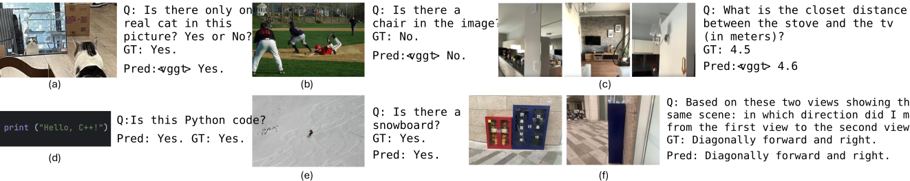

Motivation
Geometry should be requested, not blindly injected.
Existing spatial MLLMs often fuse 3D signals into every input, even when the task can be solved from standard 2D visual cues. GeoSense separates geometry into an on-demand channel and trains the model to emit an internal trigger, <vggt>, only when geometric information is necessary for the reasoning step.
Method
A decoupled architecture with an internal sense decision.
Separate geometry channel
GeoSense keeps the 2D visual encoder and the 3D geometry encoder as separate feature sources, avoiding always-on element-wise fusion.
Two-stage training
Alignment training first makes projected geometry tokens interpretable, then spatial-aware SFT teaches the model when to request them.
Adaptive inference
If the model emits <vggt>, it performs a geometry-aware second pass. Otherwise, it preserves native 2D visual reasoning.

Results
Spatial gains without collapsing general visual reasoning.
GeoSense is evaluated across spatial reasoning benchmarks and general multimodal reasoning benchmarks. The reported comparison emphasizes both spatial improvement and robustness when geometry is unnecessary.
The adaptive design outperforms always-on geometry fusion while using geometric features for only part of the evaluation samples.
| Model | Spatial Avg. | General Avg. | Overall Avg. |
|---|---|---|---|
| Qwen2.5-VL-3B | 43.4 | 53.3 | 48.3 |
| Qwen2.5-VL-7B | 50.5 | 57.8 | 54.1 |
| VG-LLM | 49.7 | 52.0 | 50.9 |
| GeoSense | 56.6 | 55.2 | 55.9 |
Visualizations
Qualitative behavior across geometry-needed and geometry-free cases.

Qualitative examples show that GeoSense can trigger geometry for directional and metric reasoning while keeping standard reasoning paths for cases that do not need 3D cues.

Compared with rigid geometry usage, GeoSense treats 3D features as a conditional resource selected by the model's internal sense decision.
Resources
Code, model checkpoint, and citation.
@article{geosense2026,
title={GeoSense: Internalizing Geometric Necessity Perception for Multimodal Reasoning},
author={Ruiheng Liu and Haihong Hao and Mingfei Han and Xin Gu and Kecheng Zhang and Changlin Li and Xiaojun Chang},
journal={Under review by the International Conference on Machine Learning (ICML)},
year={2026}
}